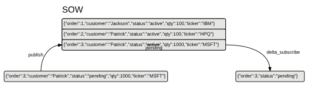

11. Delta Messaging¶
AMPS delta messaging allows applications to work with only the changed parts of a message in the SOW. In high-performance messaging, it’s important that applications not waste time or bandwidth for messages that they aren’t going to use.
Delta messaging has two distinct aspects:
- delta subscribe allows subscribers to receive just the fields that are updated within a message.
- delta publish allows publishers to update and add fields within a message by publishing only the updates into the SOW,
While these features are often used together, the features are independent. For example, a subscriber can request a regular subscription even if a publisher is publishing deltas. Likewise, a subscriber can request a delta subscription even if a publisher is publishing full messages.
To be able to use delta messages, the message type for the subscription
must support delta messages. All of the included AMPS message types,
except for binary, support delta messages, with the limitations
described in each section below. For custom message types, contact the
message type implementer to determine whether delta support is
implemented.
These features can often improve performance in environments where bandwidth is at a premium. Because these features require AMPS to parse, compare, and create messages, these features can consume somewhat more CPU on the AMPS server than a simple publish or subscribe, particularly for large messages with complex structure (such as deeply-nested XML).
Delta Subscribe¶
Delta subscribe allows applications to receive only the changed parts of a message when an update is made to a record in the SOW. When a delta subscription is active, AMPS compares the new state of the message to the old state of the message, creates a message for the difference, and sends the difference message to subscribers. Using this approach can simplify processing on the client side, and can improve performance when network bandwidth is the most important constraint.
For example, consider a SOW that contains the following messages, with
the order field as the key of the SOW topic:
Now, consider an update that changes the status of order number 3:
{
"order":3,
"customer":"Patrick",
"status":"pending",
"qty":1000,
"ticker":"MSFT"
}
For a regular subscription, subscribers receive the entire message. With a delta subscription, subscribers receive just the key of the SOW topic and any changed fields:
This can significantly reduce the amount of network traffic, and can also simplify processing for subscribers, since the only information sent is the information needed by the subscriber to take action on the message.
When the oof option is specified on a delta subscription, AMPS will deliver
the full message when a previously out-of-focus message comes into focus,
even if only some of the fields in the message have changed.
Using Delta Subscribe¶
Because a client must process delta subscriptions using substantially different logic than regular subscriptions, delta subscription is implemented as a separate set of AMPS commands rather than simply as an option on subscribe commands. AMPS supports two different ways to request a delta subscription:
| Command | Result |
|---|---|
delta_subscribe |
Register a delta subscription, starting with newly received messages. |
sow_and_delta_subscribe |
Replay the state of the SOW and atomically register a delta subscription. |
Table 11.1: Delta subscribe commands
Applications most commonly use sow_and_delta_subscribe to receive
the current state of messages in the SOW before they begin receiving
deltas.
Options for Delta Subscribe¶
The delta subscribe command accepts several options that are unique to delta subscriptions. These options control the precise behavior of delta messages:
| Option | Result |
|---|---|
no_empties |
Do not send messages if no data fields have been updated. By default, AMPS will publish a delta for every publish to the record, even if the data has not changed. By specifying this option, AMPS will only send messages when there is changed data. |
no_sowkey |
Do not include the AMPS generated SowKey with messages. By default, AMPS includes this key to help you identify unique records within the SOW. |
send_keys |
Include the SOW key fields in the message.
Because the SOW key fields indicate which
message to update, without this option,
updates to delta messages will never
contain the SOW key fields. For views, the
SOW key fields are the fields specified in
the AMPS accepts this option for backward compatibility. As of AMPS 4.0, this option is included on delta subscriptions by default. |
oof |
AMPS will deliver out of focus messages on this subscription. When focus tracking is enabled, AMPS will also deliver the full message to a subscription when a previously out-of-focus message comes into focus. |
Table 11.2: Options for delta subscriptions
Delta subscriptions also support the options provided for regular subscriptions, including the timestamp option and the conflation options described in Chapter 3 Conflation.
Identifying Changed Records¶
When an application that uses delta subscriptions receives a message, that message can either be a new record or an update to an existing record. AMPS offers two strategies for an application to tell whether the record is a new record or an existing record, and identify which record has changed if the message is an update to an existing record.
The two basic approaches are as follows:
- By default, each message delivered through a delta subscription contains a SowKey header field. This field is the identifier that AMPS assigns to track a distinct record in the SOW. If the application has previously received a SowKey with that value, then the new message is an update to the record with that SowKey value. If the application has not previously received a SowKey with that value, then the new message contains a new record.
- Delta messages can also contain the key fields from the SOW in the
body of the message. This is controlled by the
send_keysoption on the subscription, which is always enabled as of AMPS 4.0. With this approach, the application parses the body of the message to find the key. If the application has previously received the key, then the message is an update to that existing record. Otherwise, the message contains a new record.
In either case, AMPS delivers the information the application needs to determine if the record is new or changed. The application chooses how to interpret that information, and what actions to take based on the changes to the record.
AMPS also supports out-of-focus notification for delta subscriptions, as described in Chapter 8. If your application needs to know when a record is deleted, expires, or no longer matches a subscription, you can use out-of-focus messages to be notified.
Conflated Subscriptions and Delta Subscribe¶
AMPS provides subscription conflation on delta subscriptions. When conflation is enabled, each delta message during the conflation interval is merged into the conflated message. The message that is delivered is the merge of all of the deltas that arrived during the conflation interval.
Because AMPS combines successive delta messages into a single update, a
delta subscription that uses conflation may receive values that are
identical to the previous values. For example, consider the following
record in a SOW that uses /id as the key:
{
"id": 99,
"status":"open",
"notes":"none",
"xref":82
}
Assume that the following updates to the record are published during the conflation interval:
{ "id": 99, "status":"questioned", "notes":"none", "xref":82}
{ "id": 99, "status":"questioned", "notes":"jcarlo hold", "xref":82 }
{ "id": 99, "status":"cleared", "notes":"none", "xref":82 }
{ "id": 99, "status":"open", "notes":"none", "xref":82 }
At the end of the conflation interval, the subscription will receive the delta message
{
"id": 99,
"status":"open",
"notes":"none"
}
The /id field is included because that field is the key of the SOW,
and all of the delta messages produced during the conflation interval
contained that key. The /status and /notes fields are included
because there were changes to these values during the conflation
interval. The delta messages produced during the conflation interval
contained changed values, so the merged update contains those fields and
the state of the values at the end of the conflation interval. The
/xref field is not included, because none of the delta messages
produced during the conflation interval contained that field.
Select Lists and Delta Subscribe¶
When a delta_subscribe or sow_and_delta_subscribe command provides a
select list and the no_empties option, only changes to fields included in the
select list will prompt a publish to the client. Changes to fields that the subscriber does not receive
do not produce a publish.
Delta Subscribe Support¶
To produce delta messages, the message type and the topic must both support delta subscribe. When this is not the case, AMPS accepts the subscription, but provides full messages rather than delta messages.
All of the basic message types provided with AMPS support delta
subscribe with the exception of the binary message type and protobuf
message types that use protobuf version 3. Composite message types support
delta subscribe if they use the composite-local definition, as described
in the section on composite message types.
AMPS queues do not support delta subscribe. AMPS accepts a delta subscription for a queue, but produces full messages from the queue.
All other AMPS topic types that are based on a SOW support delta subscribe. AMPS topics that do not use a SOW do not support delta subscribe, and instead produce full messages.
Bookmark subscriptions are not supported for delta subscribe.
Multiple Subscriptions and Delta Subscribe¶
When a single connection to AMPS has multiple subscriptions, AMPS sends the message to that client once, with information on the set of subscriptions that match. AMPS sends a message that will include the requested data for all of the matching subscriptions. For example, if a message matches one subscription that requests full messages and another subscription from the same connection that requests deltas, both subscriptions will receive a full message. If your application depends on receiving deltas, take care that the application does not issue non-delta subscriptions for the same set of messages on the same connection.
Delta Publish¶
Delta publish allows publishers to update a message in the SOW by providing just the key fields for the SOW and the data to update. When AMPS receives a delta publish, AMPS parses the incoming message and the existing messages, identifies changed fields, and creates an updated message that merges changed fields from the publish into the existing message.
This can be particularly useful in cases where more than one worker acts on a record. For example, an order fulfillment application may need to check inventory, to ensure that the order is available, and check credit to be sure that the customer is approved for the order. These checks may be run in parallel, by different worker processes. With delta publish, each worker process updates the part of the record that the worker is responsible for, without affecting any other part of the record. Delta publish saves the worker from having to query the record and construct a full update, and eliminates the possibility of incorrect updates when two workers try to update the record at the same time.
For example, consider an order published to the SOW:
{
"id":735,
"customer":"Patrick",
"item":90123,
"qty":1000,
"state":"new"
}
Using delta publishing, two independent workers can operate on the record in parallel, safely making updates and preparing the record for a final fulfillment process.
The inventory worker process is responsible for checking inventory. This
worker subscribes to messages where
the /state = 'new' AND /inventory IS NULL AND /credit IS NULL. This
process receives the new message and verifies that the inventory system
contains 1000 of the item # 90123. When it verifies this, it uses delta
publish to publish the following update:
{
"id":735,
"inventory":"available"
}
The credit worker process verifies that the customer is permitted to
bill for the total amount. Like the inventory worker, this worker
subscribes to messages where the
/state = 'new' and /inventory IS NULL and /credit IS NULL. This
process receives the new message and verifies that the customer is
allowed to bill the total value of the order. When the check is
complete, the credit worker publishes this message:
{
"id":735,
"credit":"approved"
}
After both of these processes run, the SOW contains the following record:
{
"id": 735,
"credit": "approved",
"inventory": "available",
"customer": "Patrick",
"item": 90123,
"qty": 1000,
"state": "new"
}
The fulfillment worker would subscribe to messages where
/state = 'new' AND /inventory IS NOT NULL AND /credit IS NOT NULL.
Using Delta Publish¶
Because delta messages must be processed and merged into the existing SOW record, AMPS provides a distinct command for delta publish.
| Command | Result |
|---|---|
delta_publish |
Publish a delta message. If no record exists in the SOW, add the message to the SOW. If a record exists in the SOW, merge the data from this record into the existing record. |
Table 11.3: Delta publish command
Understanding Delta Publish¶
When AMPS receives a delta publish request, AMPS first performs any preprocessing or enrichment specified for the incoming message. AMPS then fully parses both the incoming message and the destination message, and then merges the contents of the incoming update into the existing message. The mechanism that merges the messages is message-type independent, and does not rely on the syntax or semantics of any particular message type.
Because delta publish uses a very simple, compact syntax – a partial message – for updates, AMPS makes certain assumptions about the intent of an update.
AMPS replaces the contents of the existing message based on the parsed identifiers in the update. An update to an anonymous element or the root level of a subdocument is a full replacement of that value.
For example, consider the following JSON document:
{"id":42, "contents":{"packages":[{"box":"chocolates"}, {"bowl":"noodles"} ] } }
An update to the
packagesfield of the document replaces the subdocument, so providing the followingdelta_publish:{"id":42, "contents":{"packages":[{"basket":"eggs"}]}}
Replaces the previous value of
packages, and produces the message:{"id":42, "contents":{"packages":[{"basket":"eggs"}]}}
A missing field in a delta publish means that the content of that field is unchanged.
Because AMPS treats the absence of a field in a delta update to mean that the previous value is unchanged, a
delta_publishcannot be used to remove fields from a document.For example, consider the following JSON document:
{"id":42", "flowers":"roses"}
A
delta_publishthat attempts to remove theflowersfield by simply removing will be treated as though there is no update to that field. In other words, adelta_publishof:{"id":42}
Will produce no change to the
flowersfield, and result in a document of:{"id":42, "flowers":"roses"}
To remove a field from a message, republish the full message.
AMPS does not evaluate whether a field has a different value than the previous message or has a republish of the previous value when processing a
delta_publish– any field present in the delta publish will replace the corresponding field in the existing message.For example, consider an application that advertises whether a given system is accepting requests with messages along the lines of:
{"systemId":"A34-Astro", "status":"available", "commandAccepted":["print","scan","fax"]}
Now, the system sends a delta publish update that does not change the status:
{"systemId":"A34-Astr", "status":"available"}
Even though no value in the message has changed, the publish is still processed, and the publish will still be delivered to subscribers. The fact that it replaces an existing value with the same value does not matter for AMPS. This is still considered an update. (An individual subscriber can choose not to receive updates that do not change the value of a field by using the
no_emptiesoption with a delta subscription.)
Delta Publish Support¶
To accept delta publishes, the message type and the topic must both support delta publish. When this is not the case, AMPS accepts the publish, but may not produce the expected results.
All of the basic message types provided with AMPS support delta publish
with the exception of the binary message type and protobuf message types
that use protobuf version 3. Composite message types support delta publish
if they use the composite-local definition, as described in the section
on composite message types. Types that do not support delta publish, produce
the full, literal message provided with a delta publish command (rather than
merging the publish into the previous state of the message).
When a topic uses the composite-local message type, parts of the
composite that are provided as empty (that is, zero-length) are
considered to be unchanged, and the merged message contains the existing
contents of that part. This provides a convenient way to update only one
part of a composite message, without having to republish data that has
not changed. For example, a composite-local type contains a JSON
part and a binary part can modify the JSON part without having to
republish the full binary part.
AMPS queues support delta publish to an underlying topic, if that underlying topic maintains a SOW. The merged message is provided to the AMPS queue.
All other AMPS topic types that are based on a SOW and accept publish commands support delta publish. AMPS topics that do not use a SOW do not support delta publish, so publishing a delta message to those topics produces the full, literal message from the publish command rather than a merged message. Without a SOW configured for the topic, AMPS does not track the current value of a message, and therefore does not have a way to merge the publish into an existing message.